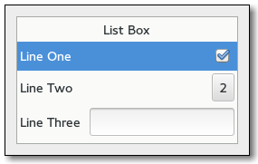

Gtk.ListBox¶
Example¶

- Subclasses:
None
Methods¶
- Inherited:
Gtk.Container (35), Gtk.Widget (278), GObject.Object (37), Gtk.Buildable (10)
- Structs:
Gtk.ContainerClass (5), Gtk.WidgetClass (12), GObject.ObjectClass (5)
class |
|
|
|
|
|
|
|
|
|
|
|
|
|
|
|
|
|
|
|
|
|
|
|
|
|
|
|
|
|
|
|
|
|
|
|
|
Virtual Methods¶
|
|
|
|
|
|
Properties¶
- Inherited:
Name |
Type |
Flags |
Short Description |
|---|---|---|---|
r/w/en |
Activate row on a single click |
||
r/w/en |
The selection mode |
Style Properties¶
- Inherited:
Signals¶
- Inherited:
Name |
Short Description |
|---|---|
The |
|
The |
|
The |
|
The |
|
The |
Fields¶
- Inherited:
Name |
Type |
Access |
Description |
|---|---|---|---|
parent_instance |
r |
Class Details¶
- class Gtk.ListBox(**kwargs)¶
- Bases:
- Abstract:
No
- Structure:
A
Gtk.ListBoxis a vertical container that containsGtk.ListBoxRowchildren. These rows can be dynamically sorted and filtered, and headers can be added dynamically depending on the row content. It also allows keyboard and mouse navigation and selection like a typical list.Using
Gtk.ListBoxis often an alternative toGtk.TreeView, especially when the list contents has a more complicated layout than what is allowed by aGtk.CellRenderer, or when the contents is interactive (i.e. has a button in it).Although a
Gtk.ListBoxmust have onlyGtk.ListBoxRowchildren you can add any kind of widget to it viaGtk.Container.add(), and aGtk.ListBoxRowwidget will automatically be inserted between the list and the widget.Gtk.ListBoxRowscan be marked as activatable or selectable. If a row is activatable,Gtk.ListBox::row-activatedwill be emitted for it when the user tries to activate it. If it is selectable, the row will be marked as selected when the user tries to select it.The
Gtk.ListBoxwidget was added in GTK+ 3.10.The
Gtk.ListBoximplementation of theGtk.Buildableinterface supports setting a child as the placeholder by specifying “placeholder” as the “type” attribute of a<child>element. SeeGtk.ListBox.set_placeholder() for info.- CSS nodes
list ╰── row[.activatable]
Gtk.ListBoxuses a single CSS node named list. EachGtk.ListBoxRowuses a single CSS node named row. The row nodes get the .activatable style class added when appropriate.- classmethod new()[source]¶
- Returns:
a new
Gtk.ListBox- Return type:
Creates a new
Gtk.ListBoxcontainer.New in version 3.10.
- bind_model(model, create_widget_func, *user_data)[source]¶
- Parameters:
model (
Gio.ListModelorNone) – theGio.ListModelto be bound to selfcreate_widget_func (
Gtk.ListBoxCreateWidgetFuncorNone) – a function that creates widgets for items orNonein case you also passedNoneas modeluser_data (
objectorNone) – user data passed to create_widget_func
Binds model to self.
If self was already bound to a model, that previous binding is destroyed.
The contents of self are cleared and then filled with widgets that represent items from model. self is updated whenever model changes. If model is
None, self is left empty.It is undefined to add or remove widgets directly (for example, with
Gtk.ListBox.insert() orGtk.Container.add()) while self is bound to a model.Note that using a model is incompatible with the filtering and sorting functionality in
Gtk.ListBox. When using a model, filtering and sorting should be implemented by the model.New in version 3.16.
- drag_highlight_row(row)[source]¶
- Parameters:
row (
Gtk.ListBoxRow) – aGtk.ListBoxRow
This is a helper function for implementing DnD onto a
Gtk.ListBox. The passed in row will be highlighted viaGtk.Widget.drag_highlight(), and any previously highlighted row will be unhighlighted.The row will also be unhighlighted when the widget gets a drag leave event.
New in version 3.10.
- drag_unhighlight_row()[source]¶
If a row has previously been highlighted via
Gtk.ListBox.drag_highlight_row() it will have the highlight removed.New in version 3.10.
- get_activate_on_single_click()[source]¶
-
Returns whether rows activate on single clicks.
New in version 3.10.
- get_adjustment()[source]¶
- Returns:
the adjustment
- Return type:
Gets the adjustment (if any) that the widget uses to for vertical scrolling.
New in version 3.10.
- get_row_at_index(index_)[source]¶
- Parameters:
index (
int) – the index of the row- Returns:
the child
Gtk.WidgetorNone- Return type:
Gets the n-th child in the list (not counting headers). If _index is negative or larger than the number of items in the list,
Noneis returned.New in version 3.10.
- get_row_at_y(y)[source]¶
- Parameters:
y (
int) – position- Returns:
the row or
Nonein case no row exists for the given y coordinate.- Return type:
Gets the row at the y position.
New in version 3.10.
- get_selected_row()[source]¶
- Returns:
the selected row
- Return type:
Gets the selected row.
Note that the box may allow multiple selection, in which case you should use
Gtk.ListBox.selected_foreach() to find all selected rows.New in version 3.10.
- get_selected_rows()[source]¶
- Returns:
A
GLib.Listcontaining theGtk.Widgetfor each selected child. Free with g_list_free() when done.- Return type:
Creates a list of all selected children.
New in version 3.14.
- get_selection_mode()[source]¶
- Returns:
- Return type:
Gets the selection mode of the listbox.
New in version 3.10.
- insert(child, position)[source]¶
- Parameters:
child (
Gtk.Widget) – theGtk.Widgetto addposition (
int) – the position to insert child in
Insert the child into the self at position. If a sort function is set, the widget will actually be inserted at the calculated position and this function has the same effect of
Gtk.Container.add().If position is -1, or larger than the total number of items in the self, then the child will be appended to the end.
New in version 3.10.
- invalidate_filter()[source]¶
Update the filtering for all rows. Call this when result of the filter function on the self is changed due to an external factor. For instance, this would be used if the filter function just looked for a specific search string and the entry with the search string has changed.
New in version 3.10.
- invalidate_headers()[source]¶
Update the separators for all rows. Call this when result of the header function on the self is changed due to an external factor.
New in version 3.10.
- invalidate_sort()[source]¶
Update the sorting for all rows. Call this when result of the sort function on the self is changed due to an external factor.
New in version 3.10.
- prepend(child)[source]¶
- Parameters:
child (
Gtk.Widget) – theGtk.Widgetto add
Prepend a widget to the list. If a sort function is set, the widget will actually be inserted at the calculated position and this function has the same effect of
Gtk.Container.add().New in version 3.10.
- select_all()[source]¶
Select all children of self, if the selection mode allows it.
New in version 3.14.
- select_row(row)[source]¶
- Parameters:
row (
Gtk.ListBoxRoworNone) – The row to select orNone
Make row the currently selected row.
New in version 3.10.
- selected_foreach(func, *data)[source]¶
- Parameters:
func (
Gtk.ListBoxForeachFunc) – the function to call for each selected child
Calls a function for each selected child.
Note that the selection cannot be modified from within this function.
New in version 3.14.
- set_activate_on_single_click(single)[source]¶
- Parameters:
single (
bool) – a boolean
If single is
True, rows will be activated when you click on them, otherwise you need to double-click.New in version 3.10.
- set_adjustment(adjustment)[source]¶
- Parameters:
adjustment (
Gtk.AdjustmentorNone) – the adjustment, orNone
Sets the adjustment (if any) that the widget uses to for vertical scrolling. For instance, this is used to get the page size for PageUp/Down key handling.
In the normal case when the self is packed inside a
Gtk.ScrolledWindowthe adjustment from that will be picked up automatically, so there is no need to manually do that.New in version 3.10.
- set_filter_func(filter_func, *user_data)[source]¶
- Parameters:
filter_func (
Gtk.ListBoxFilterFuncorNone) – callback that lets you filter which rows to showuser_data (
objectorNone) – user data passed to filter_func
By setting a filter function on the self one can decide dynamically which of the rows to show. For instance, to implement a search function on a list that filters the original list to only show the matching rows.
The filter_func will be called for each row after the call, and it will continue to be called each time a row changes (via
Gtk.ListBoxRow.changed()) or whenGtk.ListBox.invalidate_filter() is called.Note that using a filter function is incompatible with using a model (see
Gtk.ListBox.bind_model()).New in version 3.10.
- set_header_func(update_header, *user_data)[source]¶
- Parameters:
update_header (
Gtk.ListBoxUpdateHeaderFuncorNone) – callback that lets you add row headersuser_data (
objectorNone) – user data passed to update_header
By setting a header function on the self one can dynamically add headers in front of rows, depending on the contents of the row and its position in the list. For instance, one could use it to add headers in front of the first item of a new kind, in a list sorted by the kind.
The update_header can look at the current header widget using
Gtk.ListBoxRow.get_header() and either update the state of the widget as needed, or set a new one usingGtk.ListBoxRow.set_header(). If no header is needed, set the header toNone.Note that you may get many calls update_header to this for a particular row when e.g. changing things that don’t affect the header. In this case it is important for performance to not blindly replace an existing header with an identical one.
The update_header function will be called for each row after the call, and it will continue to be called each time a row changes (via
Gtk.ListBoxRow.changed()) and when the row before changes (either byGtk.ListBoxRow.changed() on the previous row, or when the previous row becomes a different row). It is also called for all rows whenGtk.ListBox.invalidate_headers() is called.New in version 3.10.
- set_placeholder(placeholder)[source]¶
- Parameters:
placeholder (
Gtk.WidgetorNone) – aGtk.WidgetorNone
Sets the placeholder widget that is shown in the list when it doesn’t display any visible children.
New in version 3.10.
- set_selection_mode(mode)[source]¶
- Parameters:
mode (
Gtk.SelectionMode) – TheGtk.SelectionMode
Sets how selection works in the listbox. See
Gtk.SelectionModefor details.New in version 3.10.
- set_sort_func(sort_func, *user_data)[source]¶
- Parameters:
sort_func (
Gtk.ListBoxSortFuncorNone) – the sort function
By setting a sort function on the self one can dynamically reorder the rows of the list, based on the contents of the rows.
The sort_func will be called for each row after the call, and will continue to be called each time a row changes (via
Gtk.ListBoxRow.changed()) and whenGtk.ListBox.invalidate_sort() is called.Note that using a sort function is incompatible with using a model (see
Gtk.ListBox.bind_model()).New in version 3.10.
- unselect_all()[source]¶
Unselect all children of self, if the selection mode allows it.
New in version 3.14.
- unselect_row(row)[source]¶
- Parameters:
row (
Gtk.ListBoxRow) – the row to unselected
Unselects a single row of self, if the selection mode allows it.
New in version 3.14.
- do_activate_cursor_row() virtual¶
Class handler for the
Gtk.ListBox::activate-cursor-rowsignal
- do_move_cursor(step, count) virtual¶
- Parameters:
step (
Gtk.MovementStep) –count (
int) –
Class handler for the
Gtk.ListBox::move-cursorsignal
- do_row_activated(row) virtual¶
- Parameters:
row (
Gtk.ListBoxRow) –
Class handler for the
Gtk.ListBox::row-activatedsignal
- do_row_selected(row) virtual¶
- Parameters:
row (
Gtk.ListBoxRow) –
Class handler for the
Gtk.ListBox::row-selectedsignal
- do_select_all() virtual¶
Select all children of box, if the selection mode allows it.
New in version 3.14.
- do_selected_rows_changed() virtual¶
Class handler for the
Gtk.ListBox::selected-rows-changedsignal
- do_toggle_cursor_row() virtual¶
Class handler for the
Gtk.ListBox::toggle-cursor-rowsignal
- do_unselect_all() virtual¶
Unselect all children of box, if the selection mode allows it.
New in version 3.14.
Signal Details¶
- Gtk.ListBox.signals.activate_cursor_row(list_box)¶
- Signal Name:
activate-cursor-row- Flags:
- Parameters:
list_box (
Gtk.ListBox) – The object which received the signal
- Gtk.ListBox.signals.move_cursor(list_box, object, p0)¶
- Signal Name:
move-cursor- Flags:
- Parameters:
list_box (
Gtk.ListBox) – The object which received the signalobject (
Gtk.MovementStep) –p0 (
int) –
- Gtk.ListBox.signals.row_activated(list_box, row)¶
- Signal Name:
row-activated- Flags:
- Parameters:
list_box (
Gtk.ListBox) – The object which received the signalrow (
Gtk.ListBoxRow) – the activated row
The
::row-activatedsignal is emitted when a row has been activated by the user.New in version 3.10.
- Gtk.ListBox.signals.row_selected(list_box, row)¶
- Signal Name:
row-selected- Flags:
- Parameters:
list_box (
Gtk.ListBox) – The object which received the signalrow (
Gtk.ListBoxRoworNone) – the selected row
The
::row-selectedsignal is emitted when a new row is selected, or (with aNonerow) when the selection is cleared.When the box is using
Gtk.SelectionMode.MULTIPLE, this signal will not give you the full picture of selection changes, and you should use theGtk.ListBox::selected-rows-changedsignal instead.New in version 3.10.
- Gtk.ListBox.signals.select_all(list_box)¶
- Signal Name:
select-all- Flags:
- Parameters:
list_box (
Gtk.ListBox) – The object which received the signal
The
::select-allsignal is akeybinding signalwhich gets emitted to select all children of the box, if the selection mode permits it.The default bindings for this signal is Ctrl-a.
New in version 3.14.
- Gtk.ListBox.signals.selected_rows_changed(list_box)¶
- Signal Name:
selected-rows-changed- Flags:
- Parameters:
list_box (
Gtk.ListBox) – The object which received the signal
The
::selected-rows-changedsignal is emitted when the set of selected rows changes.New in version 3.14.
- Gtk.ListBox.signals.toggle_cursor_row(list_box)¶
- Signal Name:
toggle-cursor-row- Flags:
- Parameters:
list_box (
Gtk.ListBox) – The object which received the signal
- Gtk.ListBox.signals.unselect_all(list_box)¶
- Signal Name:
unselect-all- Flags:
- Parameters:
list_box (
Gtk.ListBox) – The object which received the signal
The
::unselect-allsignal is akeybinding signalwhich gets emitted to unselect all children of the box, if the selection mode permits it.The default bindings for this signal is Ctrl-Shift-a.
New in version 3.14.
Property Details¶
- Gtk.ListBox.props.activate_on_single_click¶
- Name:
activate-on-single-click- Type:
- Default Value:
- Flags:
Activate row on a single click
- Gtk.ListBox.props.selection_mode¶
- Name:
selection-mode- Type:
- Default Value:
- Flags:
The selection mode